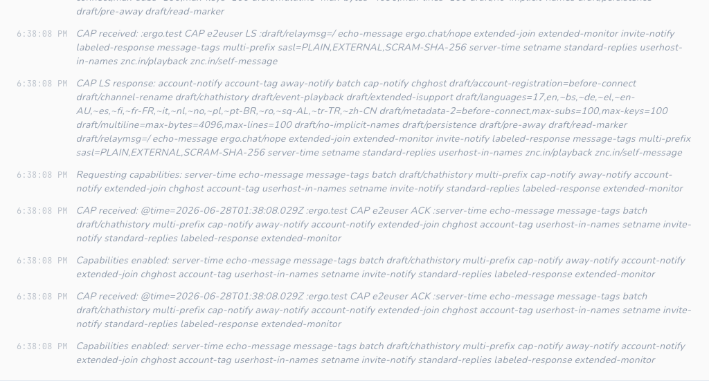
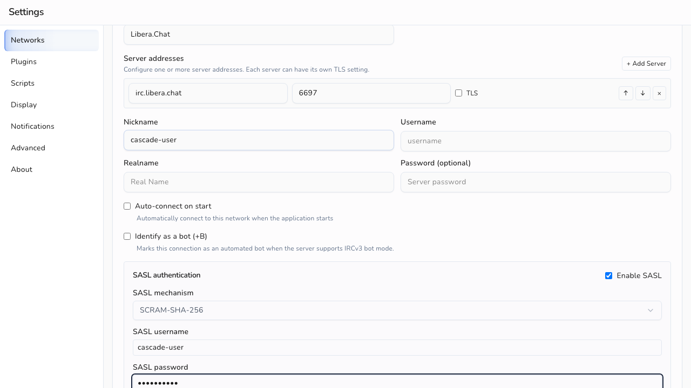
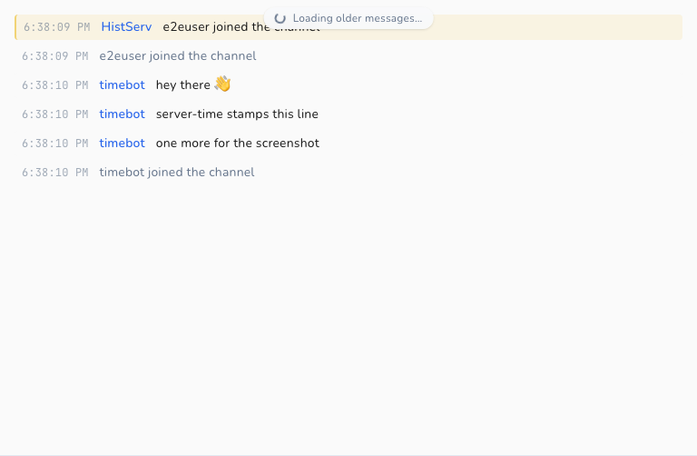
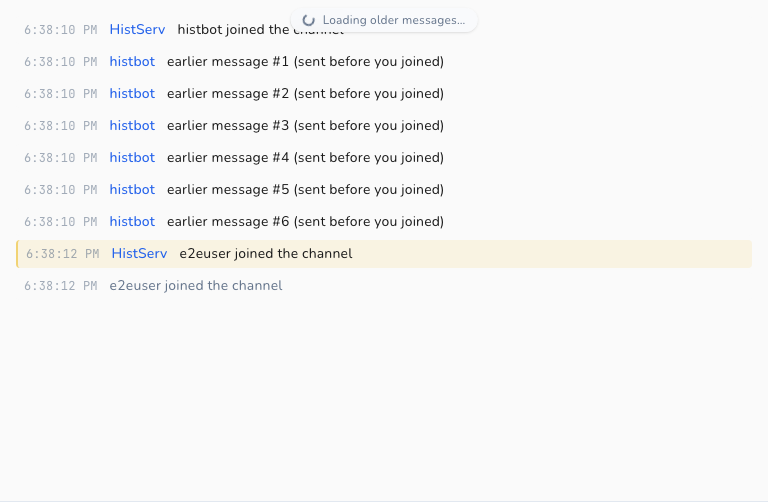
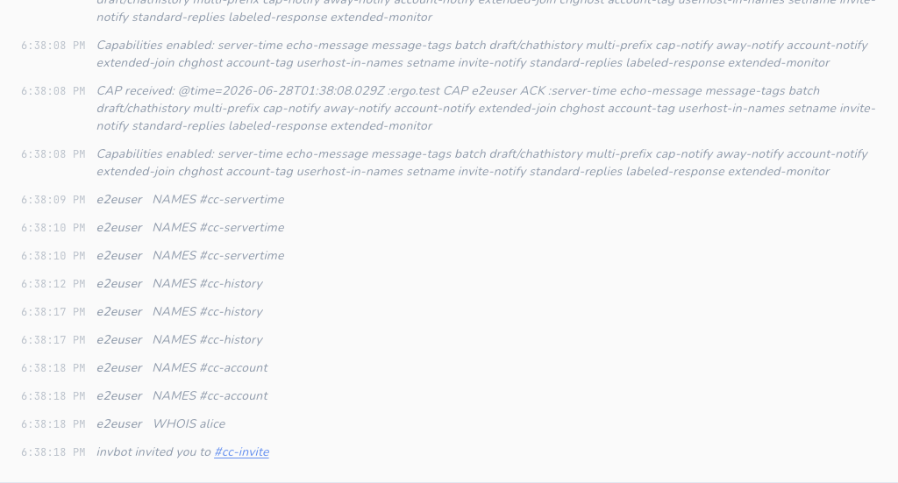
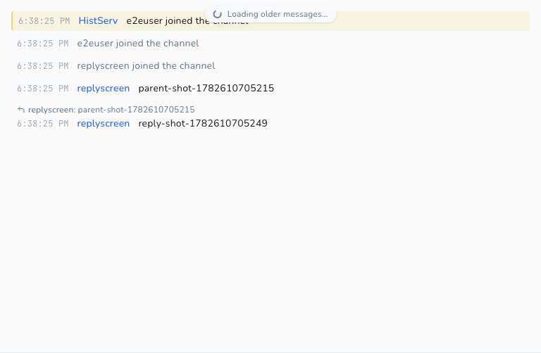
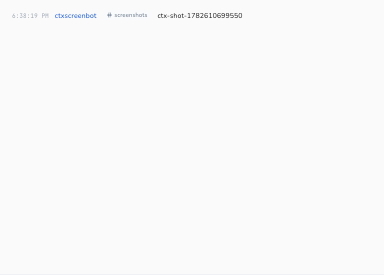
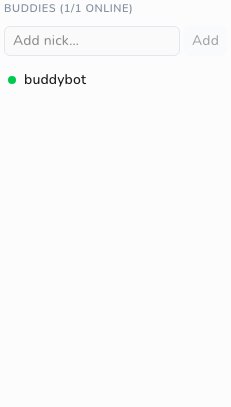
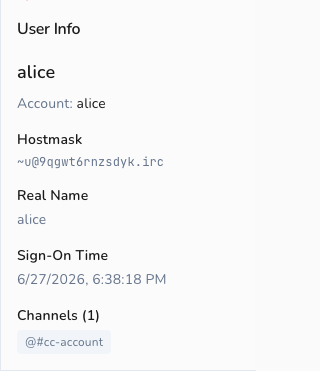

IRCv3 Support¶
Cascade is a modern IRC client with first-class IRCv3 support. This document describes every IRCv3 capability Cascade negotiates, what it does with each one, and how each surfaces in the client.
It serves two audiences:
- Users / evaluators: start with What you get.
- Contributors: the capability status matrix and
per-capability reference include code pointers
(
file:line) and screenshots produced by the e2e suite.
Screenshots in this document are generated by Playwright tests against a real Ergo server — see How the screenshots are made.
What you get¶
Because of its IRCv3 support, Cascade gives you:
- Secure login: SASL authentication (including SCRAM and TLS client certificates), so your password is never sent in the clear and you're identified to services automatically on connect.
- Accurate timestamps: messages are stamped with the server's time (
server-time), so backlog and replayed history show when a message was sent, not when your client received it. - Durable scrollback: when you join a channel or reconnect, Cascade pulls recent history
from the server (
chathistory) and scrolls back further on demand, with duplicates filtered out by message ID. - No echoed duplicates: when the server supports
echo-message, your own messages are reconciled with the server's canonical copy instead of appearing twice. - Every role at a glance: with
multi-prefix, the nick list shows all of a user's channel roles (e.g. an op who is also voiced) rather than only the highest one. - A buddy list: track specific nicks' online/offline presence across restarts in a
dedicated Buddies pane, even when you share no channel with them (
monitor). Withextended-monitor, buddies also show live away state. - Typing indicators: see when people in a channel or PM are composing a message, and
optionally let them see when you are (
+typingclient tag). Both directions toggle independently in Settings. - Reply quotes: replies to specific messages render a quote block with the original
author and text, plus a jump arrow that scrolls to the original, even across buffers
(
+draft/replyclient tag). - Channel context in PMs: private messages originating from a channel carry an "in
#channel" pill. Clicking it opens the channel, and replies in the PM thread automatically
carry the same channel context (
+draft/channel-contextclient tag).
Capability status matrix¶
Legend: ✅ Supported · ◐ Partial · ⛔ Not yet
| Capability | Status | Negotiated? | Notes |
|---|---|---|---|
sasl |
✅ | Yes (when configured) | PLAIN, EXTERNAL, SCRAM-SHA-256, SCRAM-SHA-512 |
server-time |
✅ | Yes | @time tag drives all message timestamps |
message-tags |
✅ | Yes | Foundation for @time / @msgid consumption |
echo-message |
✅ | Yes | Self-message reconciliation / dedup |
batch |
✅ | Yes | Wraps chathistory replays |
chathistory / draft/chathistory |
✅ | Yes | Latest-on-join + on-demand backscroll |
draft/event-playback |
✅ | Yes | Replays JOIN/PART/QUIT/KICK/MODE as structured lines (not HistServ text) inside chathistory batches |
msgid (via message-tags) |
✅ | n/a | Consumed for history deduplication |
sts |
✅ | Read (never REQ'd) |
Auto-upgrades plaintext→TLS; persists per-host TLS enforcement |
| CAP LS 302 negotiation | ✅ | n/a | Full LS/REQ/ACK/NAK/END lifecycle |
ISUPPORT (005) |
✅ | n/a | PREFIX / CHANMODES parsing for mode handling |
WHOIS account (330) |
✅ | n/a | Shows the account a user is logged in as |
| Bot mode | ✅ | n/a (via message-tags + 335 + ISUPPORT) |
Detection via bot tag and RPL_WHOISBOT; BOT=<letter> token parsed into ServerCapabilities.BotModeChar; WHO B flag recognised via markBot; durable per-network "Identify as a bot" setting sends MODE <nick> +<letter> at connect |
multi-prefix |
✅ | Yes | All membership prefixes parsed; shown as icon (highest) or text (full) per setting |
cap-notify |
✅ | Yes | CAP NEW auto-requests newly-offered wanted caps; CAP DEL disables withdrawn caps live |
account-notify |
✅ | Yes | Live account login/logout drives the roster + WHOIS |
away-notify |
✅ | Yes | Live away state dims members in the nick list |
extended-join |
✅ | Yes | JOIN's account is recorded into the roster |
chghost |
✅ | Yes | User host changes update the roster |
userhost-in-names |
✅ | Yes | NAMES carries nick!user@host; the host seeds the roster |
account-tag |
✅ | Yes | @account on messages keeps the roster account current |
invite-notify |
✅ | Yes | Inbound INVITEs shown as a clickable status line |
setname |
✅ | Yes | Live realname changes update the roster + WHOIS panel |
monitor |
✅ | n/a (ISUPPORT) | Durable per-network buddy list with live presence |
labeled-response |
✅ | Yes | Correlates the WHOX roster query's reply by @label |
standard-replies |
✅ | Yes | FAIL/WARN/NOTE shown as error/warning/status lines |
extended-monitor |
✅ | Yes | MONITORed nicks deliver AWAY/ACCOUNT/CHGHOST/SETNAME; buddy away state surfaces in the Buddies pane |
no-implicit-names |
✅ | Yes | Suppresses the post-JOIN NAMES reply; we send an explicit NAMES on self-join so the roster still builds |
UTF8ONLY |
✅ | n/a (ISUPPORT) | Server accepts only UTF-8; we already emit UTF-8 exclusively, so the token is recorded and honored by default |
account-extban |
✅ | n/a (ISUPPORT EXTBAN) |
$a / $a:account ban masks rendered with a semantic label in the mode editor |
+typing (client tag) |
✅ | n/a (via message-tags) |
Typing indicators in channels + PMs; send/receive independently toggleable |
+draft/reply (client tag) |
✅ | n/a (via message-tags) |
Inbound reply quotes rendered with quoted text + jump-to-original; emits +draft/reply on send |
+draft/channel-context (client tag) |
✅ | n/a (via message-tags) |
"in #channel" pill on PM messages; sticky per-PM context; triggers "message privately (re: #channel)" flow |
WHOX (354) |
✅ | n/a (ISUPPORT) | Extended WHO on join bulk-seeds the roster |
draft/message-redaction |
⛔ | No | No REDACT handling (draft, out of scope) |
The set of requested capabilities lives in one place, internal/irc/client.go:31:
var requestedCaps = []string{"sasl", "server-time", "echo-message", "message-tags", "batch", "draft/chathistory", "chathistory", "draft/event-playback", "multi-prefix", "cap-notify", "away-notify", "account-notify", "extended-join", "chghost", "account-tag", "userhost-in-names", "setname", "invite-notify", "standard-replies", "labeled-response", "extended-monitor", "no-implicit-names"}
sasl is only requested when the network has SASL configured (client.go:1927); the others
are requested whenever the server advertises them.
Per-capability reference¶
Capability negotiation (CAP LS 302)¶
Cascade negotiates capabilities using CAP LS 302, sent immediately after the connection
opens and before registration completes (client.go:441, client.go:2542). The CAP
handler implements the full lifecycle (client.go:1875):
- LS: the advertised list is assembled across multi-line continuations by
accumulateCapLS(client.go:2384, called atclient.go:1896), then intersected withrequestedCaps; only capabilities that are both wanted and offered are requested viaCAP REQ. A long list split across lines (as Ergo and Libera send) is handled correctly: each non-final line carries a*marker and its capabilities are still collected. - ACK: acknowledged capabilities are recorded in
enabledCaps(client.go:1955), which every feature gate consults at runtime. - NAK / no-overlap: negotiation ends with
CAP END(client.go:1980).
When SASL is in use, CAP END is deferred until authentication finishes.
sequenceDiagram
participant C as Cascade
participant S as IRC server
C->>S: CAP LS 302
S-->>C: CAP * LS — advertised caps (may span lines)
C->>S: CAP REQ — wanted ∩ offered
S-->>C: CAP ACK — granted caps
alt network configured for SASL
C->>S: AUTHENTICATE (PLAIN / SCRAM / EXTERNAL)
S-->>C: AUTHENTICATE +
C->>S: AUTHENTICATE credentials
S-->>C: 900 / 903 — logged in
end
C->>S: CAP END
S-->>C: 001 — registration completeIn the client: the full negotiation is logged to the network's Status buffer ("Requesting capabilities…", "Capabilities enabled…"), so you can see exactly what was negotiated.

SASL authentication¶
Cascade requests sasl only when the network is configured for it (client.go:1927), and
defers CAP END until authentication completes. Supported mechanisms (client.go:2459-2466):
| Mechanism | How it authenticates | Code |
|---|---|---|
PLAIN |
base64 \0user\0pass |
client.go:2476 |
EXTERNAL |
TLS client certificate (empty payload) | client.go:2493 |
SCRAM-SHA-256 |
salted challenge-response, no password on the wire | scram.go |
SCRAM-SHA-512 |
as above, SHA-512 | scram.go |
The flow: startSASLAuth sends AUTHENTICATE <mechanism> (client.go:2420), and
handleAUTHENTICATE dispatches server responses to the mechanism handler
(client.go:2452). Progress is emitted on the event bus (EventSASLStarted) and written to
the Status buffer.
In the client: SASL is configured per network in Settings (mechanism, username, password / certificate). Success and failure are reported in the network's Status buffer.

server-time¶
When server-time is enabled, Cascade reads the @time tag off each message and uses it as
the message timestamp, parsing RFC3339 with and without fractional seconds and falling back
to local time only if the tag is missing or unparseable (getMessageTime,
client.go:2091-2108). Replayed history always honors @time regardless of the live cap
(getHistoryTime, client.go:2229-2239), so backlog keeps its original times.
In the client: every message renders its timestamp via toLocaleTimeString()
(message-view.tsx:496, :528, :537). With server-time, these reflect when the message
was sent on the network, which matters for history and bouncer backlog.

message-tags¶
message-tags is the substrate the other tag-based features build on. Cascade consumes tags
via the underlying ergochat/irc-go library's GetTag():
@time→ message timestamps (see server-time)@msgid→ history deduplication (see chathistory)
Tags Cascade does not yet consume (e.g. @account, @label) are simply ignored.
echo-message¶
With echo-message, the server sends your own PRIVMSGs back to you. Cascade treats the
echoed copy as canonical so messages aren't duplicated:
isEchoMessagedetects a self-message by comparing the sender to your nick, gated on the cap being enabled (client.go:2112-2121).- The PRIVMSG path uses this to avoid double-storing locally sent messages
(
client.go:564-696), andpmPeerkeeps echoed private messages keyed to the right conversation (client.go:2127-2132).
In the client: your messages appear exactly once, with the server's timestamp and msgid,
whether or not echo-message is active.
batch¶
batch lets the server group related messages so the client treats them atomically. Cascade
requires it for chathistory: replays arrive wrapped in a BATCH +id chathistory … -id
group that ergochat/irc-go collects and hands to handleChatHistoryBatch
(client.go:1578-1581, client.go:2268-2323). Non-chathistory batches are passed through
unchanged.
chathistory¶
Cascade requests both the ratified chathistory and legacy draft/chathistory names and
uses whichever the server advertises (client.go:31, chatHistoryEnabled,
client.go:2197-2201). It reads the advertised per-request maximum (chathistory=N) and
clamps requests to it (setChatHistoryMax/clampChatHistoryLimit, client.go:2185-2216),
defaulting to 100 when unadvertised (client.go:2181).
Two request shapes:
- Latest-on-join / open:
RequestChatHistoryLatestpulls the most recent messages when you join a channel or open a query (client.go:2243, triggered atclient.go:769-772). - Backscroll:
RequestChatHistoryBeforefetches older messages before a cursor timestamp for on-demand scrollback (client.go:2257).
Replays are deduplicated by @msgid: getMsgID extracts the tag (client.go:2219-2224) and
the storage layer enforces uniqueness so the same message is never stored twice across
overlapping history pulls and live traffic (unique index, storage/schema.sql:120).
With draft/event-playback negotiated, the server also replays JOIN/PART/QUIT/KICK/MODE
inside chathistory batches as real structured lines carrying their original @msgid,
instead of narrating them as HistServ PRIVMSG text. buildHistoryMessage turns each into
the same join/part/quit/kick/mode row type the live handlers already write
(client.go:1926 et al.), so a replayed membership event collides with — and is skipped
against — the live row already stored for that event, via the per-conversation
(network_id, conversation, msgid) unique index. Without the cap, Ergo instead narrates
these as plain-text PRIVMSGs from HistServ, which don't carry the original msgid and can't
dedup against the live structured row.
Coverage lives in internal/irc/chathistory_test.go and internal/storage/chathistory_test.go.
In the client: joining a channel shows recent backlog immediately, and scrolling up loads older messages seamlessly without duplicates.

multi-prefix¶
Without multi-prefix, a NAMES (353) reply carries only the single highest membership
prefix for each user, so someone who is both op and voiced appears as @nick and the voice is
invisible. With the cap negotiated, the server sends every prefix the user holds,
highest-privilege first (e.g. @+nick).
The 353 handler parses all leading prefix characters off each entry with
splitMembershipPrefixes (client.go), using the prefix set advertised in ISUPPORT PREFIX
(falling back to the standard ~&@%+ set before 005 is seen) and preserving the server's
order. The result is stored in the existing ChannelUser.Modes string
(internal/storage/models.go), which already accommodates several prefixes; MODE changes
keep that string ordered via applyUserPrefix (client.go). No enabledCaps runtime gate is
needed: the parser stores whatever the server sends.
In the client: the nick list groups each user under their highest role and surfaces the
rest per a Display setting (Settings → Display → Member role display). "Icons" shows a
single icon for the highest role; "Text" shows the full prefix string (e.g. @+), making
every role visible. The preference is durable (SQLite settings table) and updates live.
userhost-in-names¶
Without this cap a NAMES (353) reply lists bare nicks, so a user's user@host is unknown
until a WHOIS or a later chghost. With userhost-in-names negotiated, the server appends
!user@host to every nick in NAMES (after any membership prefixes, e.g. @alice!~alice@host).
The 353 handler peels prefixes with splitMembershipPrefixes, then splits the remainder with
splitNickUserHost (client.go): the bare nick is stored as the channel member (unchanged),
and the user@host is fed into the live roster via applyUserMeta. This is the same Host
field chghost maintains, so the two paths converge. No enabledCaps gate is needed: ! is
not a valid nick character, so its presence is itself the signal. Parsing is covered by
internal/irc/userhost_test.go.
In the client: hovering a member in the nick list shows their user@host in the tooltip
(channel-info.tsx), alongside away/colour info, so hosts are visible on join rather than only
after a WHOIS.
Live roster (away-notify / account-notify / extended-join / chghost / account-tag)¶
These five capabilities keep the channel member list current as people go away, log in or
out of an account, or change host, all without a manual /who. They feed one piece of
session-local state: a per-network map of lowercased nick → UserMeta{Away, AwayMessage,
Account, Host, Realname} (internal/irc/events.go, internal/irc/client.go). The map is
deliberately not persisted; a nick's attributes are only meaningful for the current session
and re-accrue on reconnect (same rationale as bot mode). Realname is fed by
setname and extended-join.
Each signal updates the map through applyUserMeta, which is idempotent: it only stores and
emits EventUserMetaChanged when an attribute actually changed, so high-frequency traffic
(away toggles especially) never spams the UI.
| Capability | Trigger | Handler |
|---|---|---|
away-notify |
:nick AWAY [:msg] |
handleAway |
account-notify |
:nick ACCOUNT <acct\|*> |
handleAccount |
extended-join |
JOIN #chan <acct> :realname |
maybeApplyExtendedJoin (in the JOIN handler) |
chghost |
:nick CHGHOST <user> <host> |
handleChghost |
account-tag |
@account on any PRIVMSG/NOTICE/JOIN |
maybeApplyAccountTag |
Key lifecycle: a NICK change carries the attributes to the new nick (renameUserMeta) and a
QUIT drops them (removeUserMeta); PART/KICK do not, since the user may remain in other
channels and these attributes are network-wide.
The backend forwards EventUserMetaChanged to the frontend as usermeta-event
(app_events.go), and the store hydrates on select via GetNetworkUserMeta (app.go) into a
per-network userMeta slice (frontend/src/stores/network.ts). Two surfaces read it:
- Nick list: away members are dimmed, with their away message on hover
(
channel-info.tsx). Per the design, presence transitions are silent: they update the roster/WHOIS but never write status lines into the channel buffer. - WHOIS panel: shows a live
awaypill + away message, and the account (user-info.tsx), staying current while the panel is open.
This cluster also motivated making auto-join evented. JOIN (which triggers the NAMES list
that builds the roster) now fires on registration completion at RPL_ENDOFMOTD (376) /
ERR_NOMOTD (422), with a fallback timer armed at RPL_WELCOME (001). The old behavior was a
fixed 2-second timer that could send JOINs before the server was ready (triggerAutoJoin /
doAutoJoin, client.go).
WHOX (extended WHO)¶
The live-roster caps fill in attributes as they change, but a freshly-joined channel starts
blank until someone goes away or speaks. WHOX, an
extended WHO advertised by the WHOX ISUPPORT token (not a CAP), closes that gap by fetching
every member's attributes in one shot.
On our own JOIN, when the server advertised WHOX (c.supportsWHOX, set in the 005 handler),
requestWHOX issues WHO <channel> %tcuhnfar,<token> (client.go). The reply rows arrive as
354 (RPL_WHOSPCRPL) in WHOX's canonical field order — token, channel, user, host, nick, flags,
account, realname — and each is folded into the live roster by applyWhoxRow via applyUserMeta:
host (user@host), away (the flags field begins with G), account ("0"/"*" → none), and
realname. Correlation uses one of two paths: when labeled-response is available the reply is a
label-correlated batch (see labeled-response); otherwise the fixed
whoxRosterToken lets handleWhoxReply ignore 354s from any user-initiated WHO. Coverage:
internal/irc/whox_test.go.
In the client: there is no dedicated UI. WHOX makes the existing roster surfaces (nick-list away dimming, host tooltip, WHOIS account/realname) accurate the instant you join, rather than after the first event for each user.
labeled-response¶
labeled-response lets a client tag an
outbound command with @label=<id>; the server echoes that label on the reply (wrapped in a
batch), so the reply can be matched to the request even when several are outstanding.
Cascade's underlying ergochat/irc-go implements this around SendWithLabel: a labeled command's
reply is collected into a *Batch and delivered to a callback rather than the normal
handlers. (Inbound labels the library didn't generate are dropped, so labels must only be sent
this way.) The library learns the cap is active by passively observing our CAP ACK, and gates it
on batch also being enabled, since the reply is delivered as a batch.
Cascade's consumer is the WHOX roster query. When labeled-response is negotiated,
requestWHOX sends the WHO via SendWithLabel, and handleWhoxBatch folds the collected 354
rows into the roster with no token matching needed. Without the cap, WHOX falls back to token
correlation. WHOX is a good fit because it is a command whose whole multi-line reply we want
collected, which is exactly the shape labeled-response is built for. Cascade processes ordinary
server messages globally, so it does not label every command, only this one, where correlation
adds value. Coverage: the batch path in internal/irc/whox_test.go.
In the client: no visible surface. labeled-response only makes the WHOX reply correlation exact. It is the one ratified cap with no direct UI.
setname¶
setname lets a user change their realname (GECOS)
mid-session; the server announces it as :nick SETNAME :new real name. Without it, a realname is
fixed at connect and only seen via WHOIS.
handleSetname (client.go) records the new realname into the live roster's Realname field
via applyUserMeta, the same idempotent path the rest of the roster uses. The same field is
also seeded by extended-join, whose third parameter is the joiner's realname
(maybeApplyExtendedJoin), so a user's realname is often known from the moment they join, then
kept current by SETNAME. Coverage: internal/irc/setname_test.go.
In the client: the WHOIS panel's Real Name row prefers the live roster value over the
point-in-time WHOIS reply (user-info.tsx), so it updates the moment a SETNAME arrives while
the panel is open, mirroring how the live account is shown.
invite-notify¶
The invitee form of INVITE (:inviter INVITE you #chan) is delivered whether or not this cap
is negotiated. With invite-notify, the server also relays invites of other users to a
channel's operators (:inviter INVITE someone #chan), so ops can see who is being invited.
handleInvite (client.go) handles both: it compares the target to CurrentNick() and writes a
status-buffer line, "inviter invited you to #chan" or "inviter invited someone to
chan". The line is written with WriteMessageSync (so the row is committed before the refresh¶
event fires, avoiding a write/notify race) under a dedicated invite message type, then an
EventMessageReceived with channel: nil routes it to the status buffer and refreshes it live.
Coverage: internal/irc/invite_test.go.
In the client: invites render as a dimmed status line in which the channel name is a clickable
link that issues /join (message-view.tsx), so you can accept an invite with one click.

standard-replies¶
standard-replies gives servers a uniform
shape for out-of-band feedback: FAIL, WARN, and NOTE, each carrying
<command> <code> [<context>...] :<description>. Without it, such feedback arrives as ad-hoc
notices that are easy to miss or misattribute.
handleStandardReply (client.go) formats the reply as "<TYPE> <command> (<code>): <description>"
and writes it to the status buffer via the shared writeStatusLine helper, mapping severity to a
message type: FAIL → error, WARN → warning, NOTE → status. Coverage:
internal/irc/standard_replies_test.go.
In the client: the existing message renderer styles these by type: error in red with a ⚠,
the warning type in amber with a ⚠, and NOTE as a dimmed status line
(message-view.tsx), so a server-side failure is visually distinct from an informational note.
extended-monitor¶
extended-monitor extends
MONITOR so the server also pushes AWAY, ACCOUNT, CHGHOST, and
SETNAME notifications for nicks you monitor, even ones you share no channel with. Without it,
a buddy's only observable state is online/offline.
This was nearly free in Cascade because the live-roster path is membership-agnostic: applyUserMeta
(client.go) stores metadata for any nick unconditionally, and the existing
handleAway/handleAccount/handleChghost/handleSetname handlers already funnel into it. So the
backend change is just adding extended-monitor to requestedCaps (client.go:31); once the
server ACKs it, notifications for monitored-only nicks flow through the same idempotent
EventUserMetaChanged → usermeta-event path as channel members. Coverage:
internal/irc/extended_monitor_test.go.
In the client: the Buddies pane (monitor-list.tsx) renders a three-state dot: green
(online), amber (online but away, with the away message on hover), and grey (offline), via the
pure buddyPresence helper (frontend/src/lib/presence.ts), joining live MONITOR presence with
the roster's away state. Previously a buddy could only be green or grey.
no-implicit-names¶
no-implicit-names lets a client opt out of
the implicit NAMES reply (353/366) the server sends after each JOIN, which saves traffic
for bouncers and mobile clients rejoining many channels at once.
There is a catch: Cascade builds its nick list solely from that post-join 353, and the
WHOX roster seed fills only attributes (away/account/host/realname), not membership prefixes
(@/+). So negotiating the cap naively would leave joined channels with a flat or empty roster.
Cascade handles this by issuing an explicit NAMES <channel> on our own JOIN when the cap is
enabled (namesOnSelfJoin, gated on enabledCaps, wired into the JOIN handler in client.go); the
unchanged 353/366 handlers then rebuild the roster exactly as before. Coverage:
internal/irc/no_implicit_names_test.go.
In the client: no visible change. The cap is a wire-level optimization, and the roster appears on join just as it does without it.
UTF8ONLY¶
UTF8ONLY is a valueless ISUPPORT token by which a
server declares it accepts only UTF-8 content; a compliant client MUST set its outgoing encoding to
UTF-8 without user intervention. Cascade already emits Go strings (UTF-8) exclusively and has no
legacy-charset path, so it is compliant by construction. The 005 handler records the token onto
ServerCapabilities.UTF8Only (applyISUPPORTToken, client.go), exposed to the frontend via
GetServerCapabilities; no encoding change is required. Coverage:
internal/irc/isupport_test.go.
account-extban¶
Account EXTBAN is the ratified account-based ban
type: a server advertises EXTBAN=<prefix>,<types> (e.g. EXTBAN=$,ajrxc) and, when the a type
is present, a ban mask like $a (any logged-in user) or $a:account bans by services account
rather than hostmask.
The 005 handler parses EXTBAN into ServerCapabilities.ExtbanPrefix (the prefix rune) and
ExtbanTypes (the type set) via the pure parseExtban (modeparse.go), surfaced to the frontend
through ExtbanInfo / GetServerCapabilities. Coverage: internal/irc/extban_test.go,
internal/irc/isupport_test.go.
In the client: the channel mode editor's ban list (channel-mode-editor.tsx) renders extban
masks with a semantic label via the pure describeBan helper
(frontend/src/lib/extban.ts) instead of the opaque raw mask: $a:alice shows as an account
badge with "account: alice", and $a as "any logged-in account". The add-ban placeholder hints
the $a:account form when the server advertises it. Coverage: frontend/src/lib/extban.test.ts.
Bot mode¶
Bot mode lets a server mark certain users as
automated bots. Cascade recognizes a bot from two signals, neither of which needs a capability
beyond message-tags:
- the valueless
botmessage tag on an incoming PRIVMSG / NOTICE or JOIN (maybeMarkBotFromTag,client.go:471, called from the PRIVMSG, JOIN, and notice paths atclient.go:864,:1004,:3584), and RPL_WHOISBOT(335) in a WHOIS reply (handleWhoisBot,client.go:479).
Both funnel into markBot (client.go:441), which is idempotent: it records the nick in a
session-local per-network set and emits EventBotDetected ("bot.detected") only the first
time, so repeated bot traffic never re-notifies. Like the live-roster attributes, the set is
not persisted; it re-accrues on reconnect.
The backend forwards the event to the frontend as bot-event (app_events.go:137), and the
store keeps a per-network botNicks set (frontend/src/stores/network.ts:119), hydrated on
select via GetNetworkBots.
In the client: bot users get a "bot" badge in the nick list (channel-info.tsx:534) and
in the WHOIS panel (user-info.tsx:138), so automated participants are visually distinct from
people.
The +B user-mode half is also implemented. The BOT=<letter> ISUPPORT token is parsed
by applyISUPPORTToken (client.go) into ServerCapabilities.BotModeChar, the server's
advertised letter, never hardcoded. A bot is recognised at rest from the B flag in a
WHO/WHOX reply (the flags field), folded through the existing markBot path. A durable
per-network Identify as a bot (+B) setting (identify_as_bot) sends
MODE <nick> +<letter> after registration on each connect, using the server-advertised letter
from BotModeChar; the setting is gated on the server advertising BOT= and writes a
status-line warning when it does not. Cascade's own +B MODE echo is handled by
markSelfBotFromUserMode, which calls markBot on our own nick so the bot badge appears for
self. The pre-existing recognition surfaces, the bot tag and RPL_WHOISBOT (335), are
unchanged. The only new user-facing surface is the Identify as a bot (+B) checkbox in
network settings; the bot badge in the nick list and WHOIS panel reuses the existing UI.
Typing indicators (+typing client tag)¶
The typing client tag carries a peer's
composing state (active, paused, or done) as a TAGMSG with no message body. It
needs no dedicated capability: it rides on message-tags (already negotiated) and the
server relays the client-only +typing tag like any other message.
Send. The React composer owns the timing. A small DOM-free state
machine (frontend/src/lib/typing-sender.ts) re-asserts active at most once every 3s while
you type, emits paused after 6s idle with text still in the box, and done when you send,
clear the input, or leave the conversation. Slash commands never broadcast typing
(shouldBroadcastTyping), since composing /msg or /join isn't writing a message. Each transition calls the bound App.SendTyping
(app_commands.go), which is a thin relay over IRCClient.SendTyping (internal/irc/client.go):
it validates the state, no-ops silently if message-tags isn't enabled, and otherwise sends
conn.SendWithTags({"+typing": state}, "TAGMSG", target).
Receive. handleTypingTag (internal/irc/client.go) reads the +typing tag off an
inbound TAGMSG, drops our own echo-message echo via isMe, routes channel-vs-PM by the
target, and emits EventTypingReceived; nothing is persisted. The backend forwards it to the
frontend as typing-event (app_events.go), where an ephemeral store
(frontend/src/stores/typing.ts) tracks who is typing per conversation and self-expires each
entry after 6s (so a dropped done can't leave a stuck indicator); it also clears a network's
typers on disconnect. Coverage: internal/irc/typing_test.go, frontend/src/lib/typing-sender.test.ts,
frontend/src/stores/typing.test.ts, frontend/src/hooks/useTypingRouting.test.ts.
In the client: a line above the message input shows "Alice is typing…", aggregating in channels ("Alice and 2 others are typing…"). Two durable settings (Settings → Display → Typing notifications) gate it independently: "Send typing notifications" (default on) and "Show others' typing" (default on). You can keep seeing others while staying invisible yourself, or quiet a busy channel's indicators.
Reply quotes (+draft/reply client tag)¶
The +draft/reply client tag carries a @+draft/reply=<msgid> reference on a PRIVMSG, identifying which earlier message the sender is replying to. It needs no dedicated capability: it rides on message-tags (already negotiated), and also benefits from echo-message so that a sent reply is reconciled with the server's copy and the @msgid is authoritative.
Inbound. getReplyTag (internal/irc/tags.go) reads the +draft/reply tag (falling back to the bare reply form for compatibility) off an inbound PRIVMSG. The tag value is the @msgid of the parent message, which Cascade already stores in SQLite for history deduplication. The backend carries only that raw msgid through the message event (the reply_msgid storage field), so no separate table or schema change is needed. The parent text is resolved client-side: resolveParent(replyMsgid, index) (frontend/src/lib/reply.ts) looks the msgid up synchronously in a local index of already-loaded messages, falling back to App.GetMessageByMsgID (app.go) for a cross-buffer parent that isn't currently loaded.
Outbound. When you click Reply on a message, the frontend passes the target msgid to App.SendMessageWithContext (app_commands.go), which calls IRCClient.SendMessageWithTags (internal/irc/client.go) and emits a PRIVMSG carrying the +draft/reply tag.
Cascade accepts both the +draft/reply and bare reply tag forms inbound (the draft prefix was dropped in the ratified spec but some servers and clients still emit the prefixed form). Outbound it always emits +draft/reply.
In the client: a replied-to message renders a quote block above the reply body, showing the replier's nick, a snippet of the original text, and a jump arrow. Clicking the jump arrow scrolls to the original message if it is in the same buffer, or opens the source buffer and scrolls there for cross-buffer replies (e.g. a channel message replied to from a PM). Coverage: internal/irc/reply_test.go, frontend/src/lib/reply.test.ts.

Channel context (+draft/channel-context client tag)¶
The +draft/channel-context client tag carries a @+draft/channel-context=#channel reference on a PRIVMSG, indicating that a private message is contextually related to a specific channel. Like +draft/reply, it needs no dedicated capability: it rides on message-tags.
Inbound. getChannelContext (internal/irc/tags.go) reads the +draft/channel-context tag off an inbound PRIVMSG in a PM conversation. The tag value is a channel name. The backend carries it through the message event and stores it alongside the message so that the channel context remains visible in scrollback.
Outbound. When you initiate a private message by clicking "Message privately (re: #channel)", a flow available from a channel's nick list or from a channel-context pill, the frontend passes the channel name to App.SendMessageWithContext (app_commands.go), whose 5th argument carries the channel context. It calls IRCClient.SendMessageWithTags (internal/irc/client.go), which emits a PRIVMSG carrying the +draft/channel-context tag. The context is sticky per PM conversation: once a channel context is established (either received inbound or sent outbound), subsequent messages in that PM automatically carry the same +draft/channel-context tag until the context is cleared or changed.
Cascade accepts both the +draft/channel-context and bare channel-context tag forms inbound. Outbound it always emits the +draft/ form.
In the client: a PM message with a channel context renders a "in #channel" pill alongside the message. Clicking the pill opens or focuses that channel's buffer. A "Message privately (re: #channel)" entry in the channel nick-list context menu opens a PM with the channel context pre-set, so the first and subsequent messages in that thread all carry the tag. Coverage: internal/irc/channel_context_test.go, frontend/src/lib/channel-context.test.ts.

Strict Transport Security (STS)¶
STS lets a server tell the client to always use
TLS. It is read from the CAP LS value and never CAP REQ'd, so it is deliberately
absent from requestedCaps; the LS handler parses it directly (client.go,
handleSTSAdvertisement). How much it's trusted depends on the transport it arrived over:
- Over plaintext: only the
portdirective is honored. Cascade records a one-shot in-session upgrade and reconnects over TLS to that port, but persists nothing (a network attacker could have injected the advertisement, so it must not outlive the session). - Over TLS: the
durationis trusted. Cascade persists a per-host policy (sts_policiestable, keyed by hostname) so every future connection to that host is forced onto TLS at the policy port, even if the stored server config says plaintext.duration=0removes the policy.
Enforcement happens before each dial in the server loop (applySTS, app_connection.go): a
host under an active policy is rewritten to TLS on the policy port, and because no plaintext
fallback is added, a host under STS can never be dialed in plaintext and a failed TLS dial
won't silently downgrade. Per spec, STS is ignored for connections made to an IP literal
(irc.IsIPLiteral). Parsing and the policy store are covered by internal/irc/sts_test.go
and internal/storage/sts_policies_test.go.
In the client: the upgrade and policy lifecycle are written to the network's Status buffer ("Server advertised STS policy…", "Connecting to host:6697 (TLS enforced by STS)…"), and the Settings → Networks pane shows a 🔒 "TLS enforced until …" badge per server, with a Clear control (gated behind a confirmation, since clearing is a security downgrade).
MONITOR (buddy list)¶
MONITOR tracks the online/offline presence of
specific nicks, even ones not in any shared channel, so you can keep a "buddy list". It is
advertised via the MONITOR=<limit> ISUPPORT token (not a CAP).
Unlike the session-local roster, the buddy list is durable: monitored nicks are stored per
network in the monitored_nicks table (internal/storage/). On registration,
sendInitialMonitor re-sends the saved list to the server (MONITOR +, chunked); thereafter
MonitorAdd/MonitorRemove add and drop nicks. Presence replies — 730 (RPL_MONONLINE) and
731 (RPL_MONOFFLINE), each a comma-separated target list — are parsed by
handleMonitorPresence and folded into a session presence map by the idempotent
setMonitorPresence, which emits EventMonitorChanged only on a real change. The bound methods
AddMonitor / RemoveMonitor / GetMonitorList (app.go) coordinate persistence, the live
MONITOR command, and presence for the UI. Coverage: internal/irc/monitor_test.go and
internal/storage/monitored_nicks_test.go.
Two monitoring sources, one server list. MONITOR is fed by two sources that are unioned onto the single server-side list:
- Durable buddies: the curated, persisted list described above (shown in the Buddies pane).
- Open PM correspondents: every open private-message conversation is auto-monitored so
the DM-list entry shows real presence, then dropped from MONITOR when the PM closes. These are
transient and session-derived (computed from open PMs each connect); they never enter
monitored_nicksor the Buddies pane. Opening a DM does not add a buddy.
The rule is centralized in desiredMonitorState: a nick is monitored iff it is a durable buddy
or has an open PM, excluding yourself and service pseudo-clients (IsServiceNick:
NickServ/ChanServ/SaslServ/…). MonitorReconcileNick applies it after any buddy add/remove
(AddMonitor/RemoveMonitor) or PM open/close (SetPrivateMessageOpen), and sendInitialMonitor
arms the whole union on connect (buddies first, so they keep their slots under a tight
MONITOR=<limit>). MonitorSet tracks the armed-set and honors the advertised limit; 734
(ERR_MONLISTFULL) degrades gracefully, with extra nicks simply shown as "unknown".
In the client: the right sidebar has a Users / Buddies tab switcher (channel-info.tsx);
the Buddies pane (monitor-list.tsx) lists each buddy with a green (online) / grey (offline)
dot, an "Add nick" input, and a remove control, and updates live via the monitor-event. A
nick can also be added straight from the member list's right-click menu ("Monitor this user").
In the Direct Messages list, each conversation shows a presence dot driven by the same
MONITOR data (GetMonitorPresence seeds it, monitor-event keeps it live): solid green for
online, solid grey for offline, and a hollow neutral dot for unknown (a service nick, or not yet
tracked). See dmPresenceState in frontend/src/lib/presence.ts.

Supporting features¶
These are not CAP capabilities but are part of Cascade's modern-IRC behavior and interact with the IRCv3 features above.
- ISUPPORT (
005): Cascade parsesPREFIXandCHANMODESfrom ISUPPORT (client.go:1767-1805,modeparse.go) to classify channel and membership modes correctly per server. This drives the mode editor UI (channel-mode-editor.tsx). - WHOIS account (
330, RPL_WHOISACCOUNT): when a user is logged in, the account name is captured (client.go:1748-1762) and shown in the user info panel (user-info.tsx:128-130).

Not yet supported¶
The ratified IRCv3 set is fully implemented, with no remaining ratified gaps (see the matrix above). Everything outstanding is a draft extension, deliberately out of scope for ratified compliance and belonging to the future modern-chat product rather than this client:
draft/message-redaction(handle REDACT/DELETE) needs message-mutation handling.draft/multiline,draft/metadata-2,draft/read-marker,draft/chathistorytargets, and the remaining client-only UX tag (draft/react). The+typing,+draft/reply, and+draft/channel-contextclient tags are now supported. See Typing indicators, Reply quotes, and Channel context.
WebSocket and WebIRC are ratified but server/transport-side (gateway concerns), not
client-negotiated capabilities, so they are intentionally absent.
A prioritized, checkbox-tracked list of all outstanding work, including the ratified gaps above and the draft extensions below, lives in the IRCv3 Roadmap.
When implementing any future cap, add it to requestedCaps (client.go:31), gate behavior on
enabledCaps (or the relevant ISUPPORT token), and update this matrix.
How the screenshots are made¶
Screenshots are generated by the Playwright e2e suite rather than captured by hand, so they regenerate as the UI evolves and stay in sync with real behavior.
- Specs:
e2e/tests/screenshots-ircv3.spec.ts - Harness: the suite boots the headless Wails server-mode binary and a real Ergo IRC
server via Docker (
e2e/global-setup.ts,docker-compose.yml). Ergo supports the capabilities Cascade negotiates, so the rendered behavior is genuine. - Traffic:
e2e/lib/irc-peer.ts(IrcPeer) generates real IRC messages against Ergo; helpers ine2e/lib/actions.tsdrive connect/join/select. - Output: committed under
docs/public/developers/images/ircv3/and referenced from this document.
The specs are gated behind the CASCADE_SCREENSHOTS env var, so a normal task e2e / CI run
skips them and never rewrites the committed PNGs. Regenerate them intentionally:
Note: because regeneration is explicit (not part of the default suite), the committed images only change when someone deliberately re-runs the specs and commits the result.